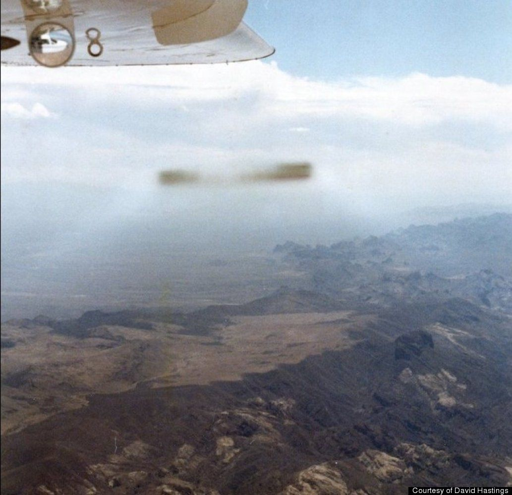
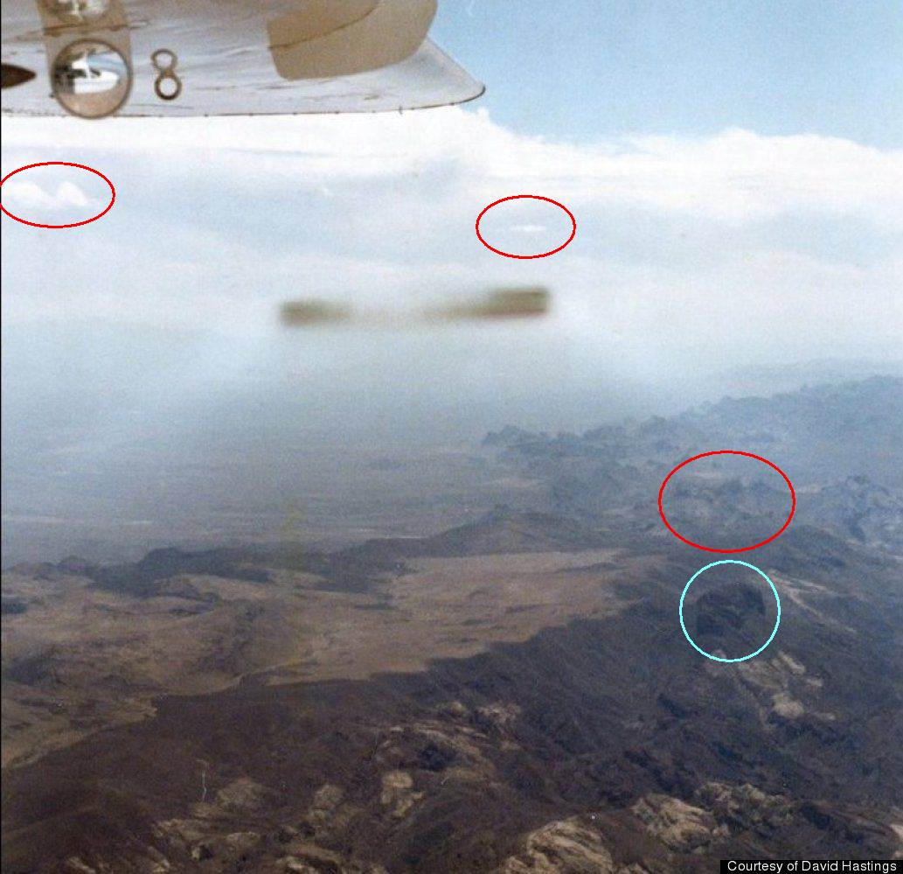
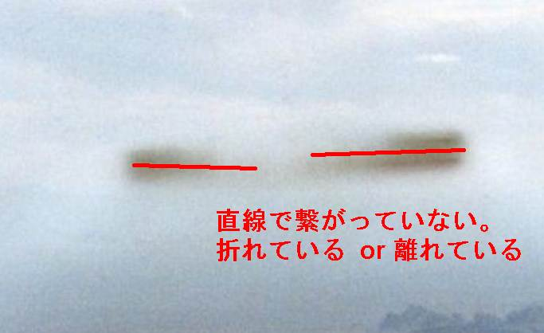
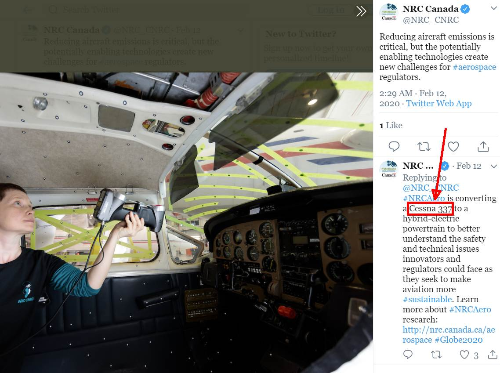
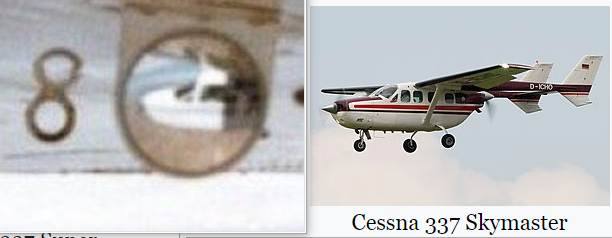
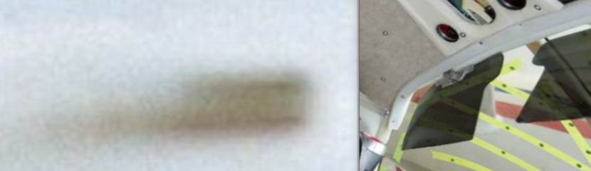
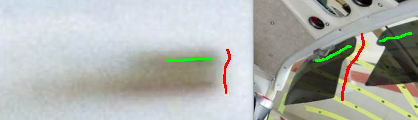
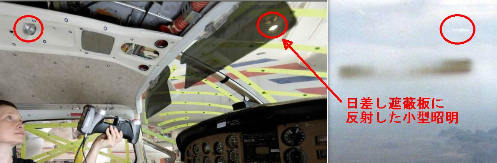

1985-09-09, California : Identity of cigar-shaped UFOs photographed from a Cessna aircraft
Summary
Illustration of identity

Original photograph

First appearance of original article
- (Japanease)
1985-09-09, California : セスナから撮影した葉巻型 UFO （→ その正体は…） （全体） (2020-05-12) UFO
- First let me excuse the following poor writing. Almost the whole of the following text was automatically translated by a machine translation software called DeepL.
Detail
Update history
（2020-05-12）finished （2020-05-07) append （2020-05-01） - I covered this incident 7 years ago in a previous article of 2013-05-15 (attached below), but today I saw a more detailed source article on this incident and added it. - I also found out the identity of this UFO, so I recorded it before I forget.
Past article of 2013-05-15
(The following is from an article added on 2020-05-01)Over the Mojave Desert, September 9, 1985: Cigar-shaped UFO photographed by a Cessna pilot
- Date: September 9, 1985 - Location: the Mojave Desert - Photographer: David HastingsThis cigar-shaped UFO was photographed by general aviation pilot David Hastings as he piloted a Cessna Skymaster plane over the Mojave Desert on Sept. 9, 1985. There has never been an indication of hoax in this case, which remains unexplained to this day.http://www.huffingtonpost.com/2012/08/03/roswell-ufo-crash_n_1715663.htmlpreface
- The above 7 year old source article was extremely short, but this source article (below) is very detailed. So it is worth adding. - I have looked at the UFO photo in question again after reading this source article, and I have found out the identity of this UFO. In other words, the identity of this UFO was specifically identified. I also found the picture as a proof of it, so I recorded it before I forget it (*1). Therefore, the source articleNo hoax was ever determined in this case, which remains unexplained to this day.expired (I believe) today, 34 years after the incident.（*1）
- In fact, I'm like, "Oh, I get it. So this is what the mystery was all about." I've experienced that I forget things I've done in this blog. It seems to be similar to the truth-forgetting phenomenon of abductee/NDE, but in my case, it seems that I'm already in the process of losing my mind. Even though I'm still young... (laughs).
Quotation
SEPTEMBER 9, 1985……MOJAVE DESERT CALIFORNIA
 One incident involved David Hastings, a British pilot pictured to the left, who, along with his co-pilot, David Paterson, was flying a Cessna Skymaster plane over the Mojave Desert in America on Sept. 9, 1985. “We were sitting there enjoying the sunshine when we both suddenly saw this speck out on the horizon at our 12 o’clock position,” Hastings told HuffPost. “This speck suddenly grew extremely quickly until we saw this huge shadow go over the top of us,” he recounted. “But the most amazing thing about it was there was no noise and absolutely no movement or turbulence at all. We looked at each other, saying, ‘What the hell was that?'” At that point, both pilots felt that something was in the air off the port (left) side of their plane, but they couldn’t see anything there. They agreed that they were able to sense something moving outside. Hastings walked to the back of the plane, grabbed his camera and returned to the cockpit where he snapped two pictures out the window. All he was able to see in the camera viewfinder was the left wing of the plane and the ground below. UFO Photograph It was only after they returned to San Francisco and got the pictures developed that they knew they’d encountered something extraordinary. “One picture showed what we expected to see ? the aircraft wing and the ground,” said Hastings. “But in the second one, there was this [cigar-shaped] thing. We were both convinced that it was not a manmade object. “Several pilots have seen UFOs in England, so it didn’t surprise me, but I was surprised that we actually got a picture of it.” Hastings recalls that, although he wasn’t frightened by the object, he was mostly concerned about the initial encounter with it and the possibility of a mid-air collision. No hoax was ever determined in this case, which remains unexplained to this day. Why do aviation officials avoid talking about UFOs? In the UK, Clarke suggests it’s something that could result in bad publicity. “Don’t forget, this is a commercial operation and the aircrew are very reluctant to file a report because the airline companies don’t want them answering questions about things that aren’t part of the corporate image.” ref: PILOTS ALIEN CRAFT PHOTO OVER THE MOJAVE DESERT | WORLD UFO PHOTOS AND NEWS ******* WORLDS LARGEST UFO NEWS WEB SITE WITH OVER 2,800 UFO CASE FILES AND MORE… - http://worldufophotosandnews.org/?p=26017
What is this UFO?
Points of Interest
The following questions are noteworthy. (a) Why does the central part of the cigar-shaped UFO fade (or disappear)? (b) What is that thin white smoke (or halo or plasma) like substance radiating diagonally down from both ends of the UFO? These two clues were the key to the clarification of the true identity. This time, it took me two hours to recognize the identity of this UFO after looking at this UFO photo, and to find the supporting evidence on the Internet.Hint image
- I'm not sure if it's a hint or not, but it's almost the answer itself.... - Hint #1  - Hint #2- Hint #3
(2020-05-07)ref: NRC Canada on Twitter: "#NRCAero is converting a Cessna 337 to a hybrid-electric powertrain to better understand the safety and technical issues innovators and regulators could face as they seek to make aviation more #sustainable. Learn more about #NRCAero research: https://t.co/0EMPLGYPEp #Globe2020" / Twitter - https://twitter.com/NRC_CNRC/status/1227283529614028802/photo/1
(The following is from an article added on 2020-05-12)introduction
- I think most of you probably figured out the identity of this UFO in the above picture, so I don't think it's worthwhile to explain how to reveal it now. So I'll end this article with a brief explanation.The identity of this UFO
- Conclusion first. This UFO is a "sun visor".A simplified version of the commentary
- The red circle in "Hint #1" above shows that the ceiling of the cockpit and the control panel are in the picture. In addition to the red circled area, many levers and instruments can be seen in the image. - From "Hint #2" above, we can confirm that the cockpit is exposed to strong sunlight. - From "Hint 3" above, we can see that the black sunshade was lowered above the front window of the cockpit.The process of unmasking
- Earlier I mentioned the following questions,The following questions are noteworthy. (a) Why does the central part of the cigar-shaped UFO fade (or disappear)? (b) What is that thin white smoke (or halo or plasma) like substance radiating diagonally down from both ends of the UFO? These two clues were the key to the clarification of the true identity.and I will explain the answers to them. "(a) Why does the central part of the cigar-shaped UFO fade (or disappear)?" --> Because they are not connected at the center in the first place.  - "(b) What is that thin white smoke (or halo or plasma) like substance radiating diagonally down from both ends of the UFO?" --> Sunlight leaking from around the sun shield.Somewhat detailed explanation
Compare Sun Shades
- According to the article quoted above, the plane which took the picture of the UFO in question was a Cessna Skymaster.One incident involved David Hastings, a British pilot pictured to the left, who, along with his co-pilot, David Paterson, was flying a Cessna Skymaster plane over the Mojave Desert in America on Sept. 9, 1985. ref: PILOTS ALIEN CRAFT PHOTO OVER THE MOJAVE DESERT | WORLD UFO PHOTOS AND NEWS ******* WORLDS LARGEST UFO NEWS WEB SITE WITH OVER 2,800 UFO CASE FILES AND MORE… - http://worldufophotosandnews.org/?p=26017- The Cessna Skymaster comes in 336 and 337 models.The first Skymaster, Model 336 Skymaster, had fixed landing gear and initially flew on February 28, 1961.[4][5] It went into production in May 1963[1] with 195 being produced through mid-1964.[3] In February 1965, Cessna introduced the Model 337 Super Skymaster.[6] The model was larger, and had more powerful engines, retractable landing gear, and a dorsal air scoop for the rear engine. (The "Super" prefix was subsequently dropped from the name.)[3] ref: Cessna Skymaster - Wikipedia - https://en.wikipedia.org/wiki/Cessna_Skymaster- "Hint #3" says the aircraft is a Cessna 337. ref: NRC Canada on Twitter: "Reducing aircraft emissions is critical, but the potentially enabling technologies create new challenges for #aerospace regulators. https://t.co/pybYGUXhMs" / Twitter - https://twitter.com/NRC_CNRC/status/1227283529614028802/photo/1- Comparing the images, it matches well with 337. (Even if it is 336, the sunshade should be used commonly in both 336 and 337.)  - Comparing the actual machine and the sunshade plate of "Hint #3", they are very similar. Especially, the wavy part is very similar.   - The image below is not very convincing because it is too blurry, but it might be a small reflection of the sunshade on the mirror...
Comparison of lighting lamp
- The small lighting lamp illuminating the instrument panel is mounted on the ceiling (red circle on picture below), and it appears that the small lighting lamp is also visible in the photo in question.  - The small lighting lamps in the sunshade in "Hint #3" are not the ones in the red circle on the left, but the ones on the ceiling on the side not shown in the photo. - The white part on the upper right of the UFO in the photo in question may not be the small lighting lamp on the ceiling because of its position and size, but it is quite predictable that its position and size are different from what it looks like because of the curved window glass.The photo itself is not fake, but the testimony is.
- The photo itself is not a fabrication, as I explained above. - The following testimony of the pilot who took this photo is a complete lie. The pilot who took this photo must have been fully aware that this was a reflection of the sunshade. Since he moved all the way to the rear to retrieve the camera, there is no way that he did not notice that it was a reflection when he moved to the rear. - He was just taking pictures for the fun of it at first, and then tell as "I might have said that it was a UFO", and then I couldn't retract it. Or, did he take the photo with the intention of deceiving us from the beginning? In any case, UFO fans have been deceived by this photo for 34 years.We were sitting there enjoying the sunshine when we both suddenly saw this speck out on the horizon at our 12 o’clock position,” Hastings told HuffPost. “This speck suddenly grew extremely quickly until we saw this huge shadow go over the top of us,” he recounted. “But the most amazing thing about it was there was no noise and absolutely no movement or turbulence at all. We looked at each other, saying, ‘What the hell was that?'” At that point, both pilots felt that something was in the air off the port (left) side of their plane, but they couldn’t see anything there. They agreed that they were able to sense something moving outside. Hastings walked to the back of the plane, grabbed his camera and returned to the cockpit where he snapped two pictures out the window. All he was able to see in the camera viewfinder was the left wing of the plane and the ground below. UFO Photograph It was only after they returned to San Francisco and got the pictures developed that they knew they’d encountered something extraordinary. “One picture showed what we expected to see ? the aircraft wing and the ground,” said Hastings. “But in the second one, there was this [cigar-shaped] thing. We were both convinced that it was not a manmade object.Supplement
- I expect some trivial objections to the above explanation, but I'm not going to argue about them because it would be dull and no one would be interested. (2020-05-12)History
(2013-05-15) Created (2020-05-01) Addition (2020-05-07) Addition (2020-05-12) Additions